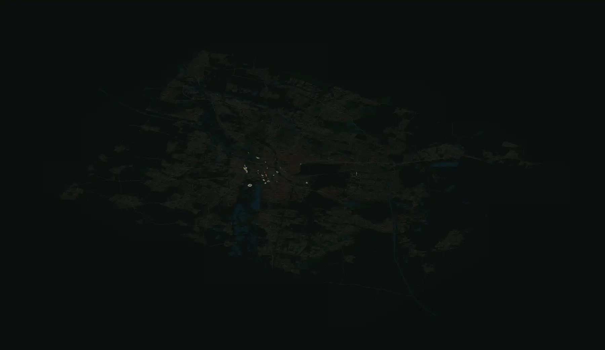

Von der Oststadt bis zum Maschsee: Straßen und Häuser nach OpenStreetMap, die Wahrzeichen von Hand gezeichnet. Leuchtende Punkte antippen: das Wahrzeichen öffnet sich mit Abendlicht.

Kartendaten © OpenStreetMap-Mitwirkende (ODbL) · Projektion nach iso-figure (MIT, Tolga Cohce) · Wahrzeichen nicht maßstabsgetreu